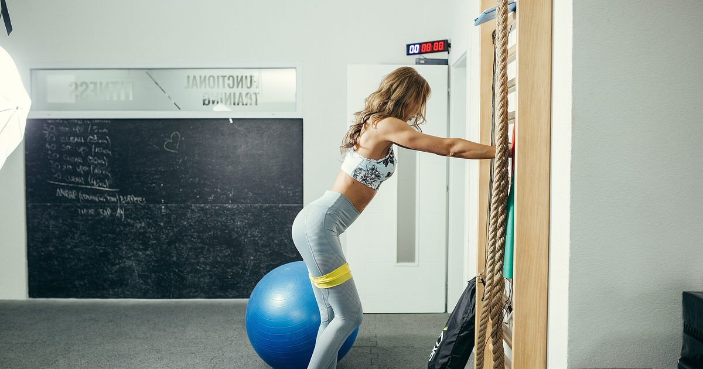

Minimal Gear
Resistance Bands: The Complete Home Training Guide
Bands are the highest-value purchase in home training and the most commonly misused. Almost every complaint about them comes from one misunderstanding about how their resistance works.

Resistance bands are the piece of home equipment I would recommend first to almost anyone, and also the one most often abandoned in a drawer after a month.
Both facts have the same cause. Bands behave differently from weights in a specific way, and people who do not understand that difference conclude the bands are inadequate when the problem is how they are being used.
Why bands matter
Bodyweight training has one structural gap. Pushing, squatting, hinging and bracing all work with a floor and some furniture. Pulling requires resistance to pull against, and there is no bodyweight arrangement that supplies it — the honest assessment is in back exercises with no equipment.
Bands close that gap for very little money. They also load three things bodyweight reaches poorly: overhead pressing, lateral raises, and direct arm work. And they assist pull-ups, which is the standard route to a first repetition — see how to do your first pull-up at home.
Two practical advantages compound this. They store on a hook, which matters in a flat — see how to store home gym equipment. And they travel in a pocket, which makes them the only worthwhile item to pack, per the travel workout routine.
The types
Long loop bands. Continuous flat loops, roughly a metre in circumference, sold in a range of widths. The most versatile format: they anchor around posts, feet, knees and bars, provide the highest resistance, and are the only type that assists pull-ups.
Tube bands with handles. Rubber tubing with moulded handles, usually sold as a set with clip-on tubes, a door anchor and ankle straps. More comfortable for pressing and rowing, and the clip system gives you precise resistance increments.
Mini loop bands. Short flat loops used around the thighs or ankles for hip abduction work. A different product with a narrow purpose — useful for the glute work in glute exercises at home, not a general training tool.
Figure-eight and therapy bands. Specialised, and not what you want for strength training.
If you buy one type, buy long loop bands. The full comparison is in loop bands vs tube bands.
How band tension actually works
This is the section that determines whether bands work for you.
A weight provides constant resistance. Ten kilograms is ten kilograms at every point in the movement. A band provides resistance proportional to how far it is stretched, so the exercise is easiest at the start of the range and hardest at the end.
Sometimes that matches the movement well. In a squat or a press, you are mechanically strongest near lockout, so increasing resistance there is convenient — the band is heaviest where you are strongest.
Sometimes it works against you. In a row, you are weakest at full stretch with your arms extended, which is exactly where the band is lightest. So the hardest part of the movement is under-loaded and the easiest part is over-loaded, which is the opposite of what you want.
The fix, and it is the single most useful technique here: pause for one second at the point of peak tension on every repetition. In a row, that is with the elbows back and the band fully stretched. This forces the muscle to work where the band is heaviest rather than bouncing through it, and it converts an exercise that felt like nothing into one that is genuinely hard.
The second fix is to shorten the band, which raises resistance throughout the whole range rather than only at the end.
Anchoring, and the safety rules
Door anchor, hinge side. Most sets include a soft anchor that threads through and sits against the far side of a closed door. Use the hinge side, and pull in the direction that presses the door closed rather than pulling it open. Lock the door if you can.
Under a foot. Stand squarely on the middle of the band, not on an edge where it can roll out. Simple and safe.
Around a fixed solid object. A stair newel post, a radiator pipe, a heavy table leg. Test it takes the load first.
Over a pull-up bar, for assisted pull-ups — see the doorway pull-up bar guide for what the bar itself can take.
Bands store considerable elastic energy and fail suddenly rather than gradually. Inspect for nicks, cracks, thin patches and whitening before every session, and replace at the first sign of wear rather than the first failure. Never stretch a band beyond about two and a half times its resting length. Never anchor to anything that can move, and never to a door someone might open. And never put your face in the line of a band under tension — recoil from a failed band is the most commonly reported band injury and it is an eye injury.
The exercises worth knowing
Rows. Anchored at chest height, driving the elbows back past the ribs. The reason to own bands. Pause at the back.
Pulldowns. Anchored high, pulling down to the chest. Trains the lats through a vertical path, which nothing else at home does without a bar.
Face pulls and pull-aparts. Small, unglamorous, and the single most useful thing most desk workers can do for their shoulders — see the bodyweight shoulder workout.
Overhead press. Standing on the band, pressing up. Bodyweight cannot load this pattern well, so it is one of the strongest arguments for owning bands. Kneel if your ceiling is low — see low-ceiling workouts.
Chest press. Anchored behind you. Complements push-ups by loading the end range differently.
Romanian deadlift. Standing on the band, hinging at the hips. Loads the hinge pattern that home routines most often omit.
Assisted pull-ups. Band over the bar, one foot in the loop. The standard progression toward a first pull-up.
Squats. Standing on the band with the handles at shoulder height. Workable, though legs are better served by single-leg bodyweight work — see training legs at home without equipment.
A complete twenty-minute session using these is in the resistance band full-body workout.
Pause for one second where the band is tightest. That single habit is the difference between bands working and bands feeling like nothing.
Choosing strengths
Band strengths are quoted as a resistance range, which is necessarily approximate because the actual resistance depends on how far you stretch it.
Buy at least three. A light band for pull-aparts and face pulls, a medium for rows and presses, and a heavy for assisted pull-ups and squats. Buying a single medium band is the standard first mistake, because one band is simultaneously too heavy for rear-deltoid work and too light for assistance.
For tube sets, buy one with clip-on tubes rather than fixed individual bands, so you can combine them for precise increments.
Progressing with bands
Four levers, in order of usefulness.
Shorten the working length. Stand wider on the band, or take up slack in your grip. This raises tension throughout the range and is the most precise adjustment available.
Move to a heavier band, which is why owning several matters.
Double the band, looping it to halve its working length and roughly double the tension.
Slow down and pause. A three-second lowering phase with a one-second pause at peak tension makes any band exercise substantially harder at no cost.
Rep ranges of twelve to twenty suit most band work, with fifteen to twenty-five for small rear-deltoid movements. Band resistance is light in strength-training terms, and evidence comparing light and heavy loads found comparable hypertrophy when sets were taken close to failure.1 That condition is doing a lot of work: light bands taken to a comfortable stopping point train very little. Weekly volume drives the result,2 so two or three sessions a week is a sensible dose.
Building a programme around bands
The most common way bands fail is not equipment failure but programming failure: people treat them as a source of random exercises rather than as one tool within a structured week.
The arrangement that works is a division of labour. Use bands for what bodyweight cannot do and bodyweight for everything else, rather than trying to build an entire programme from either.
| Pattern | Use | Why |
|---|---|---|
| Squat | Bodyweight, single-leg | Legs are strong; bands are too light |
| Hinge | Either | Band RDLs and single-leg bridges both work |
| Horizontal push | Bodyweight | Push-ups scale further than band presses |
| Vertical push | Bands | Bodyweight cannot load this well |
| Horizontal pull | Bands | The gap bands exist to fill |
| Vertical pull | Bands (assistance) | Toward a first pull-up |
| Brace | Bodyweight | Dead bugs and planks need nothing |
| Rear delts | Bands | Nothing else loads this properly at home |
Read down that column and the pattern is clear: bands earn their place on four of the eight rows, and on three of those there is no real alternative at home. That is a strong case for a cheap piece of equipment, and a poor case for building every session around it.
Six mistakes that make bands feel useless
1. Not pausing at peak tension. Covered above and worth repeating, because it accounts for more disappointment with bands than everything else combined.
2. Buying one band. A single medium band is too heavy for face pulls and too light for assisted pull-ups, so it ends up used for neither.
3. Standing too close to the anchor. If there is slack at the start of the movement, the first third of your range is unloaded. Step back until the band is under light tension before you begin.
4. Using them for legs. The commonest wasted effort. Band squats are a poor substitute for single-leg bodyweight work, which loads the leg far more — see Bulgarian split squats at home.
5. Never progressing. Bands make progression less obvious than weights, because there is no number on them. Write down which band and how much slack you took up, or you will run the same resistance for a year without noticing — see tracking progress without a gym or scale.
6. Treating them as a warm-up tool only. Bands are widely used for activation drills before real training, which is fine but sells them short. Taken close to failure they are a genuine training stimulus, not a preamble to one.
Who bands suit best
Three groups where the case is strongest.
Anyone in rented accommodation. Bands need no fixings, no drilling and no suitable door frame, which makes them the only pulling solution that works in every home. If your tenancy prohibits fixings and your doorways will not take a bar, bands are not merely the cheapest option but the only one.
Anyone who travels. A band weighs almost nothing and converts a hotel room into a usable gym, which is the single biggest problem with training on the road — see the hotel room workout.
Anyone working toward a first pull-up. Band assistance is the most controllable way to bridge the gap, because you reduce assistance by moving to a lighter band rather than by hoping you have got stronger.
Where the case is weakest: people who already own a pull-up bar and a dumbbell, and who train legs with single-leg bodyweight work. At that point bands add rear-deltoid work and overhead pressing, which is useful but no longer transformative.
Where bands fall short
Three honest limitations.
Heavy lower-body work. Legs are strong, and even a heavy band is a modest load for a squat. Single-leg bodyweight work loads the legs better than bands do.
The strength curve mismatch. Discussed above. It is manageable with pauses and shortening, but it is a genuine difference from free weights rather than something that can be entirely engineered away.
They are consumable. Latex degrades. A band is not a permanent purchase in the way a dumbbell is.
None of these undermines the case. For pulling, pressing and the accessory work bodyweight cannot reach, bands remain the most useful thing you can own for the money — the full buying order is in the minimalist home gym guide.
Care, wear and replacement
Latex degrades with ultraviolet light, heat, oils and repeated stretching. A band stored on a sunny windowsill will fail considerably sooner than one in a drawer.
Store out of direct sunlight, loosely rather than tightly knotted, away from radiators.
Inspect before every session, running the band through your fingers. Look for nicks in the edges, surface cracking, thin patches and whitening under gentle stretch.
Replace at the first sign of any of those. Bands are inexpensive and the failure mode is unpleasant.
For tube bands, check the junction where the tubing enters the handle, which is where they usually fail. Pull firmly on each handle before starting.
Never buy bands second-hand, for exactly these reasons — you cannot assess how they have been stored.
Where to start
Buy a set of three or four long loop bands with a door anchor. Learn the row and the pause first, since that habit determines whether everything else works.
Then run the twenty-minute full-body session twice a week alongside your bodyweight training, using the bands for pulling and overhead pressing and bodyweight for everything else. That division plays to the strengths of both and is how the three-day split is built.
Adult activity guidance asks for muscle-strengthening activity involving all major muscle groups on two or more days a week.3 Bands are the cheapest way to make sure the back is genuinely among them.
Frequently asked questions
Are resistance bands as effective as weights?
For pulling, pressing and accessory work, genuinely comparable — evidence comparing light and heavy loads found similar muscle growth when sets were taken close to failure. For heavy lower-body training they are not, because legs are strong relative to what even a heavy band provides.
Why do resistance band exercises feel too easy?
Almost always because you are not pausing at the point of peak tension. A band is lightest at the start of the range and heaviest at the end, so bouncing through the hard part removes most of the stimulus. Pause for one second where the band is tightest.
What resistance bands should I buy?
A set of at least three long loop bands plus a door anchor: light for face pulls and pull-aparts, medium for rows and presses, heavy for assisted pull-ups and squats. Buying a single medium band is the standard first mistake.
Where should I anchor a resistance band?
A door anchor on the hinge side, pulling in the direction that presses the door closed rather than open. Standing squarely on the middle of the band also works, as does anchoring around a fixed solid object you have tested.
How do I make resistance band exercises harder?
Shorten the working length by standing wider or taking up slack, move to a heavier band, double the band to halve its length, or slow the movement and pause at peak tension. Shortening is the most precise adjustment.
How long do resistance bands last?
They are consumable rather than permanent. Latex degrades with ultraviolet light, heat, oils and repeated stretching. Inspect before every session for nicks, cracking, thin patches and whitening, and replace at the first sign rather than the first failure.
Are resistance bands safe?
They store considerable energy and fail suddenly. The most commonly reported injury is to the eye from recoil, so never put your face in the line of a band under tension, never anchor to something that can move, and never stretch beyond about two and a half times resting length.
Sources and further reading
- Schoenfeld BJ, Grgic J, Ogborn D, Krieger JW. “Strength and Hypertrophy Adaptations Between Low- vs. High-Load Resistance Training: A Systematic Review and Meta-analysis.” Journal of Strength and Conditioning Research, 2017;31(12):3508–3523. PubMed.
- Schoenfeld BJ, Ogborn D, Krieger JW. “Dose-response relationship between weekly resistance training volume and increases in muscle mass: A systematic review and meta-analysis.” Journal of Sports Sciences, 2017;35(11):1073–1082. PubMed.
- World Health Organization. WHO Guidelines on Physical Activity and Sedentary Behaviour. 2020.
- NHS. Strength and Flex exercise plan.
- Vieira AF, Umpierre D, Teodoro JL, et al. “Effects of Resistance Training Performed to Failure or Not to Failure on Muscle Strength, Hypertrophy, and Power Output: A Systematic Review With Meta-Analysis.” Journal of Strength and Conditioning Research, 2021. PubMed.
Comments
Comments are not enabled yet. Add a hosted comment embed (Disqus, Commento, Giscus) inside this container when you are ready.